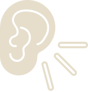

Patiria, kaip veikia demokratija realybėje
Kas yra
„Žvėriški rinkimai“?
Tai edukacinis stalo žaidimas, sukurtas tam, kad padėtų jaunimui geriau suprasti politiką per patirtį, o ne teoriją. Vietoje sudėtingų sąvokų ar sausos informacijos, žaidimas kviečia įsitraukti į gyvą sprendimų priėmimo procesą, kuriame kiekvienas dalyvis tampa svarbia visuomenės dalimi.
Žaidimo metu dalyviai įkūnija skirtingas „partijas“ ir rinkėjus, susiduria su įvairiomis visuomeninėmis problemomis, diskutuoja, argumentuoja ir priima sprendimus. Taip atkuriamas demokratinis procesas – nuo idėjų formavimo iki balsavimo.
Kuo šis žaidimas išskirtinis?
Šis žaidimas nėra apie „teisingus atsakymus“. Jis yra apie mąstymą, argumentavimą ir gebėjimą suprasti skirtingas nuomones. Žaidimo esmė – diskusija ir pasirinkimai.
Mokosi kritiškai vertinti informaciją

Mokosi klausytis kitų
Lavina gebėjimą argumentuoti
Tai yra mokymasis per patirtį, kuris leidžia ne tik suprasti, bet ir pajusti, ką reiškia būti aktyviu piliečiu.
Kodėl pasirinkta gyvūnų perspektyva?
Siekiant, kad sudėtingos teorinės idėjos ir politinės sąvokos taptų lengviau suprantamos, žaidime jos perteikiamos per metaforišką gyvūnų pasaulį. Kiekvienas personažas tampa politinės istorijos dalimi, padedančia žaidėjams paprasčiau įsisavinti abstrakčias idėjas ir įsitraukti į pasakojimą.